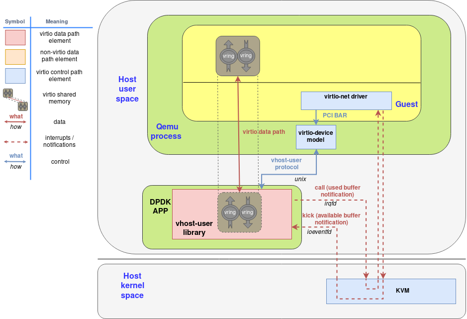
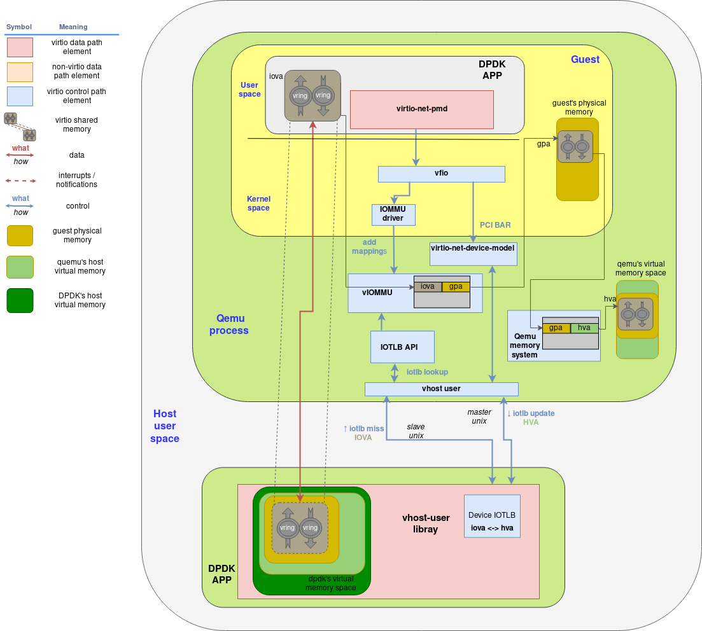
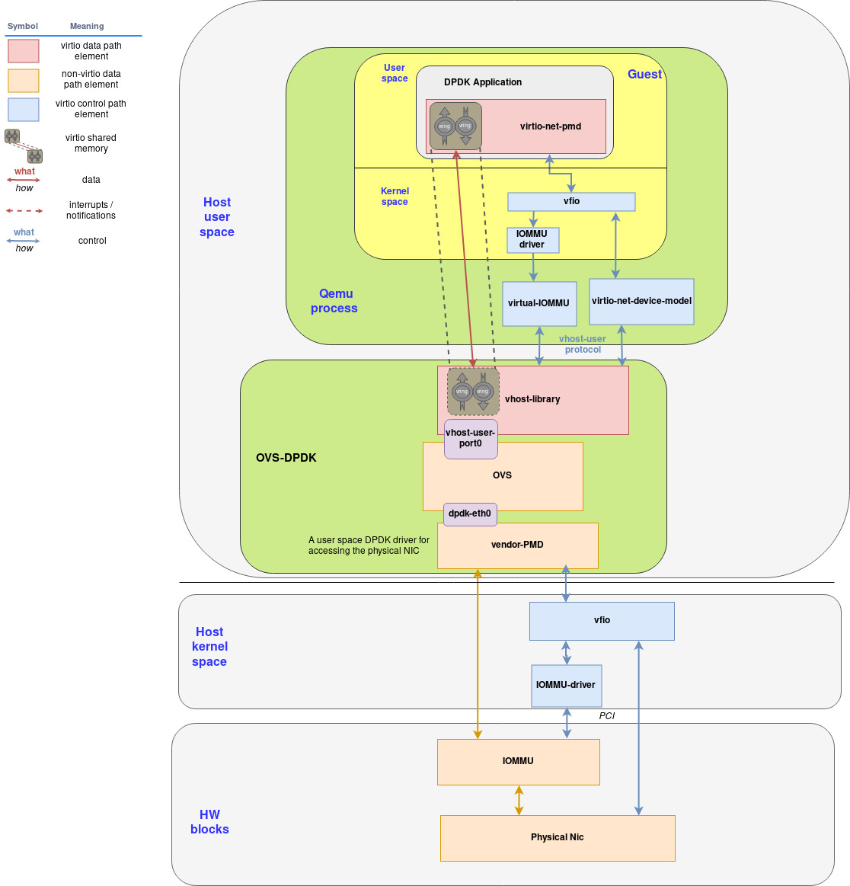
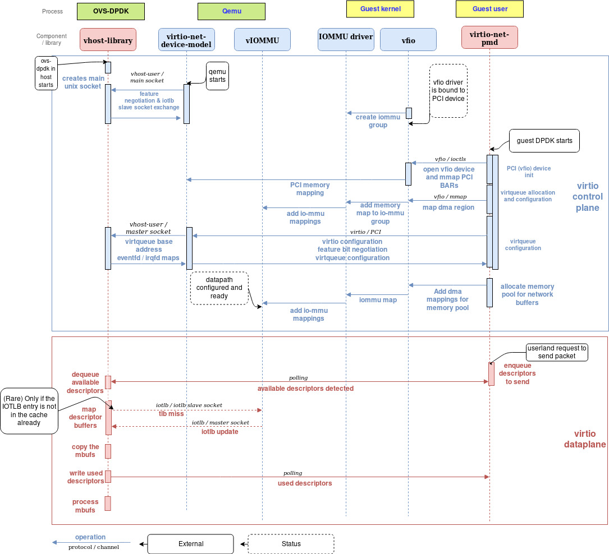

A journey to the vhost-users realm¶
Copy from https://www.redhat.com/en/blog/journey-vhost-users-realm
This post is a technical deep dive into the vhost-user/virtio-pmd architecture targeting high performance userland networking using DPDK, building on the introduction provided by the solution overview post. It is intended for architects and developers who are interested in understanding the nuts and bolts of this architecture, and will be followed by a complementary hands on blog to explore these concepts first handed.
Introduction¶
In the previous :ref: deep dive blog <virtio_networking_and_vhost_net>, we showed the benefits moving the network processing out of qemu and into a kernel driver by using the vhost-net protocol. In this post we will go one step further and show how to achieve better network performance by moving the dataplane from the kernel to userspace in both the guest and the host using the DPDK: Data Plane Development Kit. To achieve this we will also look in detail into a new implementation of the vhost protocol: the vhost-user library.
By the end of this post, you should have a deep understanding of all the components involved in a vhost-user/virtio-pmd based architecture and understand the reasons behind the significant performance improvement it provides.
DPDK and its benefits¶
It’s likely that you have already heard about DPDK. This userspace fast packet processing library is in the core of many Network Function Virtualization (NFV) applications allowing them to be implemented entirely in userspace, bypassing the kernel’s networking stack.
DPDK is a set of user space libraries that enable a user to create optimized, performant packet processing applications. It brings many advantages making it very popular among developers and a powerful tool. Following are some of them:
Processor affinity - DPDK pins each of the different threads to a specific logical core to maximize parallelism.
Huge pages - DPDK has several layers of memory management (such as the Mempool library or the Mbuf library). However, under the hood, all the memory is allocated using mmap in hugetlbfs. Using 2MB or even 1GB pages, DPDK reduces cache misses and TLB lookups.
Lockless ring buffers - DPDKs packet processing is based on a Ring library that provides an efficient, lockless ring queue that supports burst enqueue and dequeue operations.
Poll Mode Driver - To avoid the interrupt overhead, a Poll Mode Driver (PMD) abstraction is available in DPDK.
VFIO support - VFIO (Virtual Function I/O) provides a userspace driver development framework allowing userspace applications to interact directly with hardware devices by mapping the I/O space directly to the application’s memory.
In addition to these features there are two other technologies also supported by DPDK that provide us the tooling to greatly enhance the performance of network applications in cloud environments. These are:
Vhost-user library - A userspace library that implements the vhost protocol (described in the virtio-networking vhost-net post).
Virtio-PMD - Built on DPDK’s PMD abstraction, the virtio-pmd driver implements the virtio specification and allows the use of virtual devices in a standard an efficient way.
DPDK and OVS: A perfect combination¶
A good example of the benefits of DPDK is the performance increase that brought to the already popular Open vSwitch (OVS-DPDK). Open vSwitch is a feature-rich, multilayer, distributed virtual switch widely used as the main networking layer on virtual environments and other SDN applications.
It has traditionally been divided into a fast kernel-based datapath (fastpath) consisting of a flow table and a slower userspace datapath (slowpath) that processes packets that did not match any flow in the fastpath. By integrating OVS with DPDK, the fastpath is also in userland, minimizing kernel to userland interactions as well as leveraging the high performance offered by DPDK. The result is a ~10x performance increase of OVS with DPDK over native OVS.
So, how can we combine the features and performance of OVS-DPDK with a virtio-based architecture? We will walk you through the needed components one by one in the next sections.
Vhost-user library in DPDK¶
The vhost protocol is a set of messages and mechanisms designed to offload the virtio datapath processing from QEMU (the primary, that wants to offload packet processing) to an external element (the handler, that configures the virtio rings and does the actual packet processing.). The most relevant mechanisms are:
A set of messages that allow the primary to send the virtqueue’s memory layout and configuration to the handler.
A pair of eventfd-type file descriptors that allow the guest to bypass the primary and directly send and receive notifications to/from the handler: Available Buffer Notification (sent from the guest to the handler to indicate there are buffers ready to be processed) and the Used Buffer Notification (sent from the handler to the guest to indicate it has finished processing the buffers)
In the “virtio-networking vhost-net” post, we described a concrete implementation of this protocol (the vhost-net kernel module) and how it allows qemu to offload network processing to the host’s kernel. Now we introduce the vhost-user library. This library, built in DPDK, is a userspace implementation of the vhost protocol that allows qemu to offload the virtio device packet processing to any DPDK application (such as Open vSwitch).
The main difference between the vhost-user library and the vhost-net kernel driver is the communication channel. While the vhost-net kernel driver implements this channel using ioctls, the vhost-user library defines the structure of messages that are sent over a unix socket.
The DPDK application can be configured to provide the unix socket (server mode) and let QEMU connect to it (client mode). However, the opposite is also possible, which allows the DPDK to be restarted without restarting the VMs.
On this socket, all requests are initiated by the primary (i.e: QEMU) and some of them require a response such as the GET_FEATURES request or any request that has the REPLY_ACK bit set.
As in the case of the vhost-net kernel module, the vhost-user library allows the primary to configure the dataplane offloading by performing the following important actions:
Feature negotiation: Both the virtio features and the vhost-user-specific features are negotiated in a similar way: First the primary “gets” the handler’s supported features bitmask and then it “sets” the subset of them it also supports.
Memory region configuration: The master sets the memory map regions so the handler can mmap() them.
Vring configuration: The primary sets the number of virtqueues to use and their addresses within the memory regions. Note that vhost-user supports multiqueue so more than one virtqueue can be configured to improve performance.
Kick and Call file descriptors sending: Usually, the irqfd and the ioeventfd mechanisms are used. For more on these mechanisms, see “Deep dive into Virtio-networking and vhost-net”, for more on the virtio queue mechanism see the upcoming virtio dataplane post.
As a result of this mechanism, the DPDK application can now process packets by sharing the memory region with the guest and can send and receive notifications directly to and from the guest without qemu having to intervene.
The last element that glues everything together is QEMU’s virtio device model. It has two main tasks:
It emulates a virtio device that shows up in the guest in a specific PCI port that can be probed and configured seamlessly by the guest. In addition, it maps the ioeventfd to the emulated device’s Memory-mapped I/O space and the irqfd to it’s Global System Interrupt (GSI). The result is that the guest is unaware of the fact that both the notifications and the interrupts are being forwarded to and from the vhost-user library without QEMU’s intervention
Instead of implementing the actual virtio datapath it acts as the master in the vhost-user protocol to offload this processing to the vhost-user library in the DPDK process
It processes the requests coming from the control virtqueue, which, in some cases, are translated into vhost-user requests and forwarded to the slave.
This diagram shows how the vhost-user-library running as part of the DPDK-APP interacts with qemu and the guest using the virtio-device-model and the virtio-pci device:
A few points to mention on this diagram:
The virtio memory region is initially allocated by the guest.
The corresponding virtio driver interacts with the virtio device normally, through the PCI BARs configuration interface defined in the virtio specification.
The virtio-device-model (inside QEMU) uses the vhost-user protocol to configure the vhost-user library, as well as setting the irqfd and ioeventfd file descriptors.
The virtio memory region that was allocated by the guest is mapped (using mmap syscall) by the vhost-user library, i.e: the DPDK application.
The result is that the DPDK application can read and write packets directly to and from guest memory and use the irqfd and the ioeventfd mechanisms to notify with the guest directly.
Userland Networking in the guest¶
We’ve already covered how DPDK’s vhost-user implementation allows us to offload the datapath processing from the host kernel (vhost-net) to a dedicated DPDK userspace application (such as Open vSwitch) hence improving the performance of our network dramatically. Now, we will see how to do the same with the guest by running a high performance networking application (such as as NFV service) in the guest’s userspace replacing the virtio-net kernel approach.
In order to be able to run a userspace networking application directly on the device we need three components:
VFIO: VFIO is a userspace driver development framework that allows userspace applications to directly interact with devices (bypassing the kernel)
Virtio-pmd driver: is a DPDK driver, built on the Poll Mode Driver abstraction, that implements the virtio protocol
IOMMU driver: The IOMMU driver is in managing the virtual IOMMU (I/O Memory Management Unit), an emulated device that performs I/O address mappings for DMA-capable devices.
Let’s go one by one and describe these components in more detail.
VFIO¶
VFIO stands for Virtual Function I/O. However, Alex Williamson, maintainer of vfio-pci kernel driver suggested calling it “Versatile Framework for userspace I/O,” which might be more accurate. VFIO is basically a framework for building userspace drivers that provides:
Mapping of device’s configuration and I/O memory regions to user memory
DMA and interrupt remapping and isolation based on IOMMU groups. We will go deeper into what the IOMMU is and how it works later on this post. For now, let’s say it allows the creation of virtual I/O memory spaces that get mapped to physical memory (similarly to how the normal MMU maps non-IO virtual memory), so when a device wants to DMA to a virtual I/O address, the IOMMU will remap that address and potentially apply isolation and other security policies.
Eventfd and irqfd (remember those?) based signalling mechanism to support events and interrupts from and to the userspace application.
Quoting the kernel documentation: “If you wanted to write a driver prior to VFIO, you had to either go through the full development cycle to become proper upstream driver, be maintained out-of-tree or make use of the UIO framework which has no notion of IOMMU protection, limited interrupt support and requires root privileges to access things like PCI configuration space.”
VFIO exposes a user friendly API creating character devices (in /dev/vfio/) that support ioctl calls for describing the device, the I/O regions and their read/write/mmap offsets on the device descriptor as well as mechanisms for describing and registering interrupt notifications.
Virtio-pmd¶
DPDK provides a driver abstraction called Poll Mode Driver (PMD) that sits between the device driver and the user application. It offers a lot of flexibility to the user application while keeping the extensibility, i.e. the capability of implementing drivers for new devices.
Some of its more remarkable features are listed below:
A set of APIs allow the specific driver to implement the device-specific receive and transmit functions.
Per-port and per-queue hardware offloading can be configured both statically and dynamically
An extensible API for statistics is available, allowing the driver to define its own driver-specific statistics and the application to probe the available statistics and retrieve them.
The virtio Poll Mode Driver (virtio-pmd) is one of the many drivers that use the PMD API and offers applications written with DPDK a fast and lock-free access to a virtio device providing the basic functionality of packet reception and transmission using virtio’s virtqueues.
Apart from all the features that any PMD has, the virtio-pmd driver implementation supports:
Flexible mergeable buffers per packet when receiving and scattered buffer per packet when transmitting
Multicast and promiscuous mode
MAC/vlan filtering
The result is a high performance userspace virtio driver that allows any DPDK application to seamlessly use virtio’s standard interface.
Introducing the IOMMU¶
An IOMMU is pretty much the equivalent of an MMU for I/O space (where devices access memory directly using DMA). It sits between the main memory and the devices, creates a virtual I/O space for each device, and provides a mechanism to map that virtual I/O memory dynamically to physical memory. So, when a driver configures a device’s DMA (for example, a network card), it configures the virtual addresses and when the device tries to access them, they get remapped by the IOMMU.
It provides many advantages such as:
Large contiguous virtual memory regions can be allocated without needing to be contiguous in physical memory.
Some devices do not support addresses long enough to access the entire physical memory, the IOMMU solves that problem.
Memory is protected from DMA attacks performed by malicious our faulty devices that attempt to access memory not explicitly allocated for them. The devices only “see” the virtual address space and the running OS exclusively controls the IOMMU’s mappings.
In some architectures, Interrupt Remapping is supported which can allow for interrupt isolation and migration.
As usual everything comes with a cost, in the case of IOMMU the disadvantages are:
There is a performance degradation related with the page translation service
There is consumption of physical memory for the added page translation tables
Lastly, the IOMMU offers a PCIe Address Translation Service interface that devices can use to query and cache address translations in their internal Device Table Lookaside Buffers (TLB).
vIOMMU - IOMMU for the guest¶
Of course, if there is a physical IOMMU (for example Intel VT-d and AMD-VI) there is a virtual IOMMU inside qemu. Specifically, QEMU’s vIOMMU has the following characteristics:
It translates guest I/O virtual addresses (IOVA) to guest physical addresses (GPA), which can be translated to QEMU’s host virtual address (HVA) through QEMU’s memory management system.
Performs device isolation.
Implements a I/O TLB API so that the mappings can be consulted from outside qemu.
So, in order to get a virtual device working with a virtual IOMMU we have to:
Use one of the available APIs to create the necessary IOVA mappings into the vIOMMU. Currently those APIs are:
The kernel’s DMA API for kernel drivers
VFIO for userspace drivers
Configure the device’s DMA with the virtual I/O addresses
vIOMMU and DPDK integration¶
The integration between the virtual IOMMU and any userspace network application is usually done through the VFIO driver. As we have already mentioned, this driver will perform device isolation and automatically add the iova-to-gpa mappings to the IOMMU.
In addition to supporting VFIO to set up the network device, the use of DPDK has another very important benefit with regards to the IOMMU. Thanks to the memory management mechanism used by DPDK, which allocates a static memory pool that is then used to store the packet buffers and the virtual queues, the number of Device TLB synchronization messages drop dramatically and so does the performance penalty associated with them. The use of hugepages further contributes to optimize the TLB lookups, since less number of memory pages can cover the same amount of memory.
vIOMMU and vhost-user integration¶
When a device that is being emulated in QEMU attempts to DMA to the guest’s virtio I/O space it will use the vIOMMU TLB to look up the page mapping and perform a secured DMA access. Question is what happens if the actual DMA was being offloaded to an external process such as a DPDK application using vhost-user library?
When the vhost-user library tries to directly access the shared memory, it has to translate all the addresses (I/O virtual addresses) into its own memory. It does that by asking QEMU’s vIOMMU for the translation through the Device TLB API. Vhost-user library (as well as vhost-kernel driver) uses PCIe’s Address Translation Services standard set of messages to request a page translation to QEMU using a secondary communication channel (another unix socket) that it creates when IOMMU support is configured.
Overall, there are 3 address translations that have to be made:
QEMU’s vIOMMU translates IOVA (I/O virtual address) to GPA (Guest Physical Address).
Qemu’s memory management translates GPA (Guest Physical Address) to HVA (Host Virtual Address within the address space of the qemu process).
Vhost-user library translates (QEMU’s) HVA to its own HVA. This is usually as simple as adding the QEMU’s HVA to the address returned by mmap(2) when the vhost-user library mapped QEMUs memory.
Obviously, all these translations can potentially have an important performance impact, especially if dynamic mapping is used. However, static, hugepage allocation (which is exactly what DPDK does) can minimize this performance penalty.
The following diagram enhances the previous vhost-user architecture to include the IOMMU components:
A few points to mention on this, rather complex, diagram:
The guest’s physical memory space is the memory the guest perceives as physical but, obviously, it is inside QEMU’s process (host) virtual address. When the virtqueue memory region is allocated, it ends up somewhere in the guest’s physical memory space.
When an I/O virtual address is assigned to the memory range that contains the virtqueues, an entry with it’s associated guest physical address (GPA) is added to the vIOMMU’s TLB table.
On the other side, QEMU’s memory management system is aware of where the guest physical memory space resides within its own memory space. Therefore, it is able to translate guest physical addresses to host (QEMU’s) virtual addresses.
When the vhost-user library tries to access an IOVA it has no translation for, it sends a IOTLB miss message through the secondary unix socket.
The IOTLB API receives the request and looks up the address, first translating the IOVA to the GPA and finally the GPA to the HVA. It then sends the translated address through the master unix socket back to the vhost-user library.
Finally, the vhost-user library has to make one final translation. Since it has qemu’s memory mapped into its own, it has to translate qemu’s HVA to its own HVA and access the shared memory.
Putting everything together¶
In this post we have covered a number of components including DPDK, virtio-pmd, VFIO, IOMMU etc…
The following diagram shows how these building blocks work together to implement a vhost-user/virtio-pmd architecture:
A few points to mention on this diagram:
Comparing this diagram with the previous one we’ve added the components needed to connect the host’s OVS-DPDK application to a physical NIC using the hardware IOMMU, VFIO and a vendor-specific PMD driver. By now, this should not raise any eyebrows since it is equivalent to what it is done for the guest.
An example flow¶
The following flow diagram presents the steps needed to set up the virtio high-performance dataplane:
Control Plane¶
Here are the steps necessary to set up the control plane:
When the DPDK application in the host (OvS) starts it creates a socket used (in server mode) for virtio-related negotiations with qemu.
When qemu starts it connects to the main socket and, if the feature VHOST_USER_PROTOCOL_F_SLAVE_REQ is offered by vhost-user, it creates a second socket and passes it to vhost-user for it to connect to and send iotlb synchronization messages.
When the QEMU <-> vhost-library negotiation ends, two sockets are shared between them. One for virtio configuration and the other one for iotlb message exchange.
The guest boots and the vfio driver is bound to the PCI device. It creates accesses to the iommu groups (which depend on HW topology)
When the dpdk application starts in the guest it performs the following initialization steps:
Initialize the PCI-vfio device. Also, the vfio driver maps the PCI config space to user memory.
The virtqueues are allocated.
Using vfio, a DMA mapping request of the virtqueue memory space is performed, which adds the dma mappings to the vIOMMU device through the IOMMU kernel driver.
Then, the virtio feature negotiation takes place. In this case, the address that is used as virtqueue base address is the IOVA (in the I/O virtual address space). Mappings of eventfd and irqfd are set so that interrupts and notifications can be routed directly between the guest and the vhost-user library without QEMU’s intervention.
Finally, the dpdk application allocates a big chunk of contiguous memory for network buffers. Mappings for this memory region are also added to the vIOMMU through the VFIO and the IOMMU driver.
At this point the configuration is finished and the dataplane (virtqueues and notification mechanisms) is ready to use.
Data Plane
In order to transmit a packet, the following steps take place:
The DPDK application in the guest commands the virtio-pmd to send a packet. It writes the buffers and adds their corresponding descriptors in the available descriptor ring.
The vhost-user PMD in the host is polling the virtqueue, so it immediately detects new descriptors are available and begins processing them.
For each descriptor, the vhost-user PMD maps its buffer (i.e: translates its IOVA to a HVA). In the rare case the buffer memory is a page not already mapped in the vhost-user’s IOTLB, a request to QEMU will be sent. However, the fact that the DPDK application in the guest allocates static hugepages keeps the IOTLB requests to QEMU to a minimum.
The vhost-user PMD copies the buffers into mbufs (the message buffers used by DPDK applications).
The descriptors are added to the used descriptor ring. These are immediately detected by the DPDK application in the guest who is also polling the virtqueues.
The mbufs are processed by the DPDK application in the host.
Summary and conclusions¶
DPDK is a promising technology that is gaining a lot of traction for the benefits it brings to the high performance networking in userland. Not only this technology, combined with the Open vSwitch, can provide the flexibility and performance modern virtual environments require, but it will also plays a key role in the NFV deployments.
In order to fully leverage this technology, both as the datacenter switching datapath and as an enabler for NFV applications in the guests, it is necessary to securely create an efficient datapath between the host and the guests. Here is where virtio-net technology comes into play.
Vhost-user provides a reliable and secure mechanism to offload the network processing to DPDK based applications. It integrates with the vIOMMU to provide isolation and memory protection while liberating QEMU from the hard work of processing all the packets.
In the guest, the implementation of the virtio specification in DPDK (virtio-pmd) enables the creation of a fast datapath in guests, leveraging the efficient memory management and the high speed provided by DPDK’s Poll Mode Driver.
If you want to learn more about virtio technology, vhost-user and DPDK and you’re not afraid of getting your hands dirty, don’t miss our hands-on post on vhost-user!